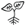

Incredible Edible Bristol, Bee The Change and Grow Bristol are collaborating on an exciting project that is bringing food growing to the centre of the city.You will see a trail of food growing spaces springing up as you walk from Platform 3 at Temple Meads past the council offices at 100 Temple Street and along Redcliffe Way to Millennium Square. Its aim is to inspire and educate - showing that food growing can be, and is, relevant in the urban landscape, as well as to provide free food for people and pollinators.
Sites are listed in the menu on the right (). Click on each location for details. Read more on the main websites:
Web design: Richard Thomas (source @ GitHub)
After considerable conversation with Network Rail it was agreed that we could put our first garden on Platform 3 of Temple Meads Station. This is a difficult bed as it has very limited light and water and we are in the middle of deciding what is best to do with the planting in it. However, at the moment it has a Family Apple Tree, which is one that has been grafted with 2 different varieties, a Blackcurrant bush in reverence to the fact that Ribena was first made in Bristol, and a rhubarb which is currently hiding.
The raised bed by the Passenger Shed at Temple Meads is one that is difficult to manage as it has an immensely sunny aspect and so needed planting with a crop that would cope with some drought. With this in mind, and because our aim is to introduce some more unusual species to Bristol in terms of what we traditionally think we can grow, we introduced a dwarf Nectarine to this bed.
And so far it is doing well and has some fruit starting to swell!!
When James, our strategy team member and maker of extraordinary raised beds mentioned the video below, we immediately knew we had to make one of these for our Urban Growing Trail. The Engine Shed seemed like the optimum place to put the bed as it's as low tech as it gets whilst being seriously high tech in the way it uses capillary action to create this amazing bed that only needs watering every 3 weeks of so!!
In the bed are a variety of crops that are really proving that the capillary action in the bed works! Tomatoes, squashes, fennel, brassicas and sweet marjoram are all looking well and will soon be cropping at which point we will replant with crops that will continue to produce food well into the autumn.
You will see looking at the bed that we took the design stage a step further than the Food For Free project. Shape Studio did a brilliant job of making the bed not only productive but also beautiful.
The decisions around what to plant into this garden were taken looking making it productive for 2015 as well as looking beyond this year and into the future. The backbone of the garden are the 2 apple trees, and the perennial fruit and vegetable plants which will remain in place and productive for many years to come. However, it was also necessary to ensure productivity for this year whilst the perennial plants are young and concentrating on putting roots out into the soil rather than cropping so we also added some annual vegetables as well as some edible flowers to fill in the gaps as it were. The edible flowers will self seed and so become a yearly part of the garden too.
Plants included: 2 Apple Trees, Globe Artichokes, Grapevine Venus, Blackcurrant Titania, Redcurrant Red Lake, Rhubarb Victoria, Rhubarb Timperly Early, Climbing French Bean Blue Lake, Kohl Rabi, Black Kale, Curly Kale, Sweetcorn, Butternut Squash, Calendula, Nasturtium.
The garden outside Thomas Chatterton's Birthplace has been designed with permaculture firmly at the forefront of it's being. Rather than producing a garden that needs huge amounts of maintenance we have put together a garden that is mainly perennial and that has minimal watering needs. In it we have also included a pollinator bed that is full of perennial plants that are bee and pollinator friendly, therefore feeding ourselves but also ensuring plenty of food for the creatures we rely on to pollinate our crops.
- In the bee bed: Sage, Chives, Verbena bonariensis, Echinops, Perennial Scabious, Perennial Cornflower, Field Poppies, Borage, Veronicastrum
- In the beds for humans: Japanese Quince, Chokeberries, Greengage, Red veined sorrel, Alpine strawberries, Rhubarb, Rosemary, Fennel
We will be adding to these beds throughout the year to create a wonderful, perennial and year round garden which is good for man and beast.

All of the trees and shrubs in this garden were chosen by the parish committee at St Mary Redcliffe, and we were very pleased that they went for the trees that we suggested as they are rarely found in the urban landscape and so will offer harvests that we do not see often in the city. As you will see when you visit the garden, we have bought substantially sized trees so that there will be fruit in the next couple of years and one of the trees had fruitlets on it when planted.
- Trees: Medlar, Quince Vranja
- Soft fruit: 3 Blackcurrants, 3 Gooseberries, 2 Redcurrants, 1 Whitecurrant.
There will be limited fruit production this year but next year everything in the garden will fruit, with the soft fruit beginning in late June and July, the Quince in late September to October and the Medlar in October and November.
The herb bed in Anchor Square was built and planted for the first Food Connections Festival in Bristol in 2014. Sponsored by Almondsbury Garden Centre, it is a beautiful raised planter filled with perennial herbs including lavenders, rosemary, thymes, marjoram and three sages, pineapple, blackcurrant and traditional. We interplant each year with annual herbs such as parsley and coriander.
When the bed was first installed, during the food Connections Festival, we worked with mainly children to plant the bed whilst chatting with their parents about what we were doing and who Incredible Edible Bristol were. We are shortly going to replant some of the herbs to refresh the bed, but its basic make up will remain the same.
The 5 beds in Millennium Square are themed so that each bed tells a story of how space can be efficiently used when it is at a premium, to grow maximum crops and show what can be grown in a small, urban space. Starting with the bed by the Planetarium, the themes are:
- Soft fruit, herbs and edible flowers/pollinator friendly planting
- Soft fruit - mainly strawberries
- Salads and quick crops along with beans
- Vegetables
- Herbs and late winter crops
Each bed also contains fruit trees that over the years will become fully fruiting if small trees. These are all apples and pears at the moment but other species will be added over time.
These are by no means set in stone but we hope that by doing things this way we can guarantee that something will be growing in each bed all year round. This winter we are going to grow some green manures in some of the beds overwinter as well, in order to continue to work on the soil health in each bed.
These beds are supported by Almondsbury Garden Centre and @Bristol, who own the beds.